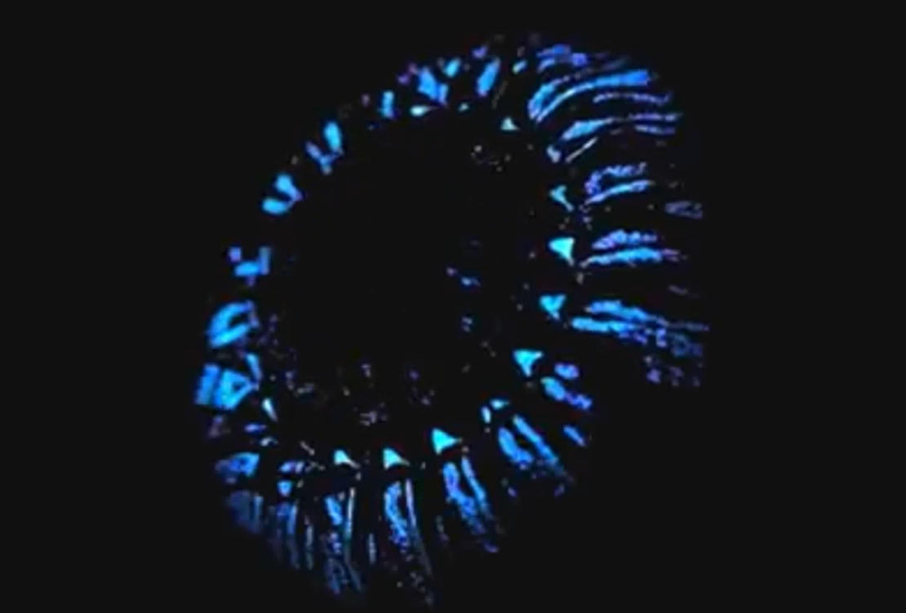
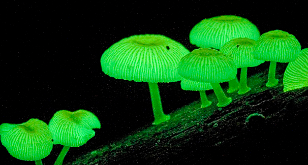
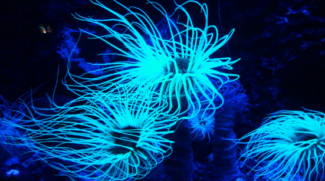

Bioluminescence in Motion
Many marine organisms emit light when disturbed. This reaction can be triggered by movement, waves, or physical contact.
Deep-Sea Bioluminescence
The image below shows a deep-sea organism using bioluminescence to survive in an environment with no sunlight.
This light can be used to attract prey, confuse predators, or communicate with other organisms.
Bioluminescent Fungi
This image shows bioluminescent mushrooms growing on decaying wood. Unlike marine organisms, these fungi emit light continuously rather than in response to movement.
Scientists believe the glow helps attract insects, which then spread fungal spores through the forest ecosystem.
Bioluminescent Sea Anemones
The organisms shown here are bioluminescent sea anemones, marine animals closely related to jellyfish and corals.
Their blue light is produced through chemical reactions and may serve as a defense mechanism or a way to communicate in dark underwater environments.
